Tutorial¶
First of all, let us import the PICOS module and cvxopt
>>> import picos as pic
>>> import cvxopt as cvx
We now generate some arbitrary data, that we will use in this tutorial.
>>> pairs = [(0,2), (1,4), (1,3), (3,2), (0,4),(2,4)] #a list of pairs
>>> A = []
>>> b = ( [0 ,2 ,0 ,3 ], #a tuple of 5 lists, each of length 4
... [1 ,1 ,0 ,5 ],
... [-1,0 ,2 ,4 ],
... [0 ,0 ,-2,-1],
... [1 ,1 ,0 ,0 ]
... )
>>> for i in range(5):
... A.append(cvx.matrix(range(i-3,i+5),(2,4))) #A is a list of 2x4 matrices
>>> D={'Peter': 12,
... 'Bob' : 4,
... 'Betty': 7,
... 'Elisa': 14
... }
Let us now create an instance P of an optimization problem
>>> prob = pic.Problem() #create a Problem instance
Variables¶
We will now create the variables of our optimization problem. This is done by calling the method add_variable(). This function adds an instance of the class Variable in the dictionary prob.variables, and returns a reference to the freshly added variable. As we will next see, we can use this Variable to form affine and quadratic expressions.
>>> t = prob.add_variable('t',1) #a scalar
>>> x = prob.add_variable('x',4) #a column vector
>>> Y = prob.add_variable('Y',(2,4)) #a matrix
>>> Z = []
>>> for i in range(5):
... Z.append( prob.add_variable('Z[{0}]'.format(i),(4,2)) )# a list of 5 matrices
>>> w={}
>>> for p in pairs: #a dictionary of (scalar) binary variables, indexed by our pairs
... w[p] = prob.add_variable('w[{0}]'.format(p),1 , vtype='binary')
Now, if we try to display a variable, here is what we get:
>>> w[2,4]
# variable w[(2, 4)]:(1 x 1),binary #
>>> Y
# variable Y:(2 x 4),continuous #
Also note the use of the attributes name, value, size, and vtype:
>>> w[2,4].vtype
'binary'
>>> x.vtype
'continuous'
>>> x.vtype='integer'
>>> x
# variable x:(4 x 1),integer #
>>> x.size
(4, 1)
>>> Z[1].value = A[0].T
>>> Z[0].is_valued()
False
>>> Z[1].is_valued()
True
>>> Z[2].name
'Z[2]'
Affine Expressions¶
We will now use our variables to create some affine expressions, which are stored as instance of the class AffinExp, and will be the core to define an optimization problem. Most python operators have been overloaded to work with instances of AffinExp (a list of available overloaded operators can be found in the doc of AffinExp). For example, you can form the sum of two variables by writing:
>>> Z[0]+Z[3]
# (4 x 2)-affine expression: Z[0] + Z[3] #
The transposition of an affine expression is done by appending .T:
>>> x
# variable x:(4 x 1),integer #
>>> x.T
# (1 x 4)-affine expression: x.T #
Parameters as constant affine expressions¶
It is also possible to form affine expressions by using parameters stored in data structures such as a list or a cvxopt matrix (In fact, any type that is recognizable by the function _retrieve_matrix()).
>>> x + b[0]
# (4 x 1)-affine expression: x + [ 4 x 1 MAT ] #
>>> x.T + b[0]
# (1 x 4)-affine expression: x.T + [ 1 x 4 MAT ] #
>>> A[0] * Z[0] + A[4] * Z[4]
# (2 x 2)-affine expression: [ 2 x 4 MAT ]*Z[0] + [ 2 x 4 MAT ]*Z[4] #
In the above example, you see that the list b[0] was correctly converted into
a  vector in the first expression, and into
a 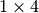 vector in the second one. This is because the overloaded
operators always try to convert the data into matrices of the appropriate size.
vector in the first expression, and into
a 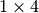 vector in the second one. This is because the overloaded
operators always try to convert the data into matrices of the appropriate size.
If you want to have better-looking string representations of your affine expressions, you will need to convert the parameters into constant affine expressions. This can be done thanks to the function new_param():
>>> A = pic.new_param('A',A) #this creates a list of constant affine expressions [A[0],...,A[4]]
>>> b = pic.new_param('b',b) #this creates a list of constant affine expressions [b[0],...,b[4]]
>>> D = pic.new_param('D',D) #this creates a dictionary of constant AffExpr, indexed by 'Peter', 'Bob', ...
>>> alpha = pic.new_param('alpha',12) #a scalar parameter
>>> alpha
# (1 x 1)-affine expression: alpha #
>>> D['Betty']
# (1 x 1)-affine expression: D[Betty] #
>>> b
[# (4 x 1)-affine expression: b[0] #,
# (4 x 1)-affine expression: b[1] #,
# (4 x 1)-affine expression: b[2] #,
# (4 x 1)-affine expression: b[3] #,
# (4 x 1)-affine expression: b[4] #]
>>> print b[0]
[ 0.00e+00]
[ 2.00e+00]
[ 0.00e+00]
[ 3.00e+00]
The above example also illustrates that when a valued affine expression exp is printed, it is its value that is displayed. For a non-valued affine expression, __repr__ and __str__ produce the same result, a string of the form '# (size)-affine expression: string-representation #'. Note that the constant affine expressions, as b[0] in the above example, are always valued. To assign a value to a non-constant AffinExp, you must set the value property of every variable involved in the affine expression.
>>> x_minus_1 = x - 1
>>> x_minus_1 #note that 1 was recognized as the (4x1)-vector with all ones
# (4 x 1)-affine expression: x -|1| #
>>> print x_minus_1
# (4 x 1)-affine expression: x -|1| #
>>> x_minus_1.is_valued()
False
>>> x.value = [0,1,2,-1]
>>> x_minus_1.is_valued()
True
>>> print x_minus_1
[-1.00e+00]
[ 0.00e+00]
[ 1.00e+00]
[-2.00e+00]
We also point out that new_param() converts lists into vectors and lists of lists into matrices (given in row major order). In contrast, tuples are converted into list of affine expressions:
>>> pic.new_param('vect',[1,2,3]) # [1,2,3] is converted into a vector of dimension 3
# (3 x 1)-affine expression: vect #
>>> pic.new_param('mat',[[1,2,3],[4,5,6]]) # [[1,2,3],[4,5,6]] is converted into a (2x3)-matrix
# (2 x 3)-affine expression: mat #
>>> pic.new_param('list_of_scalars',(1,2,3)) # (1,2,3) is converted into a list of 3 scalar parameters
[# (1 x 1)-affine expression: list_of_scalars[0] #,
# (1 x 1)-affine expression: list_of_scalars[1] #,
# (1 x 1)-affine expression: list_of_scalars[2] #]
>>> pic.new_param('list_of_vectors',([1,2,3],[4,5,6])) # ([1,2,3],[4,5,6]) is converted into a list of 2 vector parameters
[# (3 x 1)-affine expression: list_of_vectors[0] #,
# (3 x 1)-affine expression: list_of_vectors[1] #]
Overloaded operators¶
OK, so now we have some variables (t, x, w, Y, and Z) and some parameters (A, b, D and alpha). Let us create some affine expressions with them.
>>> A[0] * Z[0] #left multiplication
# (2 x 2)-affine expression: A[0]*Z[0] #
>>> Z[0] * A[0] #right multiplication
# (4 x 4)-affine expression: Z[0]*A[0] #
>>> A[1] * Z[0] * A[2] #left and right multiplication
# (2 x 4)-affine expression: A[1]*Z[0]*A[2] #
>>> alpha*Y #scalar multiplication
# (2 x 4)-affine expression: alpha*Y #
>>> t/b[1][3] - D['Bob'] #division by a scalar and substraction
# (1 x 1)-affine expression: t / b[1][3] -D[Bob] #
>>> ( b[2] | x ) #dot product
# (1 x 1)-affine expression: 〈 b[2] | x 〉 #
>>> ( A[3] | Y ) #generalized dot product for matrices: (A|B)=trace(A*B.T)
# (1 x 1)-affine expression: 〈 A[3] | Y 〉 #
We can also take some subelements of affine expressions, by using the standard syntax of python slices:
>>> b[1][1:3] #2d and 3rd elements of b[1]
# (2 x 1)-affine expression: b[1][1:3] #
>>> Y[1,:] #2d row of Y
# (1 x 4)-affine expression: Y[1,:] #
>>> x[-1] #last element of x
# (1 x 1)-affine expression: x[-1] #
>>> A[2][:,1:3]*Y[:,-2::-2] #extended slicing with (negative) steps is allowed
# (2 x 2)-affine expression: A[2][:,1:3]*( Y[:,-2::-2] ) #
In the last example, we keep only the second and third columns of A[2], and the columns of Y with an even index, considered in the reverse order. To concatenate affine expressions, the operators // and & have been overloaded:
>>> (b[1] & b[2] & x & A[0].T*A[0]*x) // x.T #vertical (//) and horizontal (&) concatenation
# (5 x 4)-affine expression: [b[1],b[2],x,A[0].T*A[0]*x;x.T] #
When a scalar is added/substracted to a matrix or a vector, we interprete it as an elementwise addition of the scalar to every element of the matrix or vector.
>>> 5*x - alpha
# (4 x 1)-affine expression: 5*x + |-alpha| #
Warning
Note that the string representation '|-alpha|' does not stand for the absolute value of -alpha, but for the vector whose all terms are -alpha.
Summing Affine Expressions¶
You can take the advantage of python syntax to create sums of affine expressions:
>>> sum([A[i]*Z[i] for i in range(5)])
# (2 x 2)-affine expression: A[0]*Z[0] + A[1]*Z[1] + A[2]*Z[2] + A[3]*Z[3] + A[4]*Z[4] #
This works, but you might have very long string representations if there are a lot of summands. So you’d better use the function picos.sum()):
>>> pic.sum([A[i]*Z[i] for i in range(5)],'i','[5]')
# (2 x 2)-affine expression: Σ_{i in [5]} A[i]*Z[i] #
It is also possible to sum over several indices
>>> pic.sum([A[i][1,j] + b[j].T*Z[i] for i in range(5) for j in range(4)],['i','j'],'[5]x[4]')
# (1 x 2)-affine expression: Σ_{i,j in [5]x[4]} |A[i][1,j]| + b[j].T*Z[i] #
A more complicated example, given in two variants: in the first one, p is a tuple index representing a pair, while in the second case we explicitely say that the pairs are of the form (p0,p1):
>>> pic.sum([w[p]*b[p[1]-1][p[0]] for p in pairs],('p',2),'pairs')
# (1 x 1)-affine expression: Σ_{p in pairs} w[p]*b[p__1-1][p__0] #
>>> pic.sum([w[p0,p1]*b[p1-1][p0] for (p0,p1) in pairs],['p0','p1'],'pairs')
# (1 x 1)-affine expression: Σ_{p0,p1 in pairs} w[(p0, p1)]*b[p1-1][p0] #
It is also possible to sum over string indices (see the documentation of sum()):
>>> pic.sum([D[name] for name in D],'name','people_list')
# (1 x 1)-affine expression: Σ_{name in people_list} D[name] #
Objective function¶
The objective function of the problem can be defined with the function set_objective(). Its first argument should be 'max', 'min' or 'find' (for feasibility problems), and the second argument should be a scalar expression:
>>> prob.set_objective('max',( A[0] | Y )-t)
>>> print prob
---------------------
optimization problem (MIP):
59 variables, 0 affine constraints
w : dict of 6 variables, (1, 1), binary
Z : list of 5 variables, (4, 2), continuous
t : (1, 1), continuous
Y : (2, 4), continuous
x : (4, 1), integer
maximize 〈 A[0] | Y 〉 -t
such that
[]
---------------------
With this example, you see what happens when a problem is printed: the list of optimization variables is displayed, then the objective function and finally a list of constraints (in the case above, there is no constraint).
Norm of an affine Expression¶
The norm of an affine expression is an overload of the abs() function. If x is an affine expression, abs(x) is its Euclidean norm 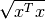.
>>> abs(x)
# norm of a (4 x 1)- expression: ||x|| #
In the case where the affine expression is a matrix, abs() returns its
Frobenius norm, defined as  .
.
>>> abs(Z[1]-2*A[0].T)
# norm of a (4 x 2)- expression: ||Z[1] -2*A[0].T|| #
Note that the absolute value of a scalar expression is stored as a norm:
>>> abs(t)
# norm of a (1 x 1)- expression: ||t|| #
However, a scalar constraint of the form  is handled as two linear constraints by PICOS, and so a problem with the latter
constraint
can be solved even if you do not have a SOCP solver available.
Besides, note that the string representation of an absolute value uses the double bar notation.
(Recall that the single bar notation |t| is used to denote the vector
whose all values are t).
is handled as two linear constraints by PICOS, and so a problem with the latter
constraint
can be solved even if you do not have a SOCP solver available.
Besides, note that the string representation of an absolute value uses the double bar notation.
(Recall that the single bar notation |t| is used to denote the vector
whose all values are t).
Quadratic Expressions¶
Quadratic expressions can be formed in several ways:
>>> t**2 - x[1]*x[2] + 2*t - alpha #sum of linear and quadratic terms
#quadratic expression: t**2 -x[1]*x[2] + 2.0*t -alpha #
>>> (x[1]-2) * (t+4) #product of two affine expressions
#quadratic expression: ( x[1] -2.0 )*( t + 4.0 ) #
>>> Y[0,:]*x #Row vector multiplied by column vector
#quadratic expression: Y[0,:]*x #
>>> (x +2 | Z[1][:,1]) #scalar product of affine expressions
#quadratic expression: 〈 x + |2.0| | Z[1][:,1] 〉 #
>>> abs(x)**2 #recall that abs(x) is the euclidean norm of x
#quadratic expression: ||x||**2 #
>>> (t & alpha) * A[1] * x #quadratic form
#quadratic expression: [t,alpha]*A[1]*x #
It is not possible (yet) to make a multidimensional quadratic expression.
Constraints¶
A constraint takes the form of two expressions separated by a relation operator.
Linear (in)equalities¶
Linear (in)equalities are understood elementwise. The strict operators < and > denote weak inequalities (less or equal than and larger or equal than). For example:
>>> (1|x) < 2 #sum of the x[i] less or equal than 2
# (1x1)-affine constraint: 〈 |1| | x 〉 < 2.0 #
>>> Z[0] * A[0] > b[1]*b[2].T #A 4x4-elementwise inequality
# (4x4)-affine constraint: Z[0]*A[0] > b[1]*b[2].T #
>>> pic.sum([A[i]*Z[i] for i in range(5)],'i','[5]') == 0 #A 2x2 equality. The RHS is the all-zero matrix
# (2x2)-affine constraint: Σ_{i in [5]} A[i]*Z[i] = |0| #
Constraints can be added in the problem with the function add_constraint():
>>> for i in range(1,5):
... prob.add_constraint(Z[i]==Z[i-1]+Y.T)
>>> print prob
---------------------
optimization problem (MIP):
59 variables, 32 affine constraints
w : dict of 6 variables, (1, 1), binary
Z : list of 5 variables, (4, 2), continuous
t : (1, 1), continuous
Y : (2, 4), continuous
x : (4, 1), integer
maximize 〈 A[0] | Y 〉 -t
such that
Z[1] = Z[0] + Y.T
Z[2] = Z[1] + Y.T
Z[3] = Z[2] + Y.T
Z[4] = Z[3] + Y.T
---------------------
The constraints of the problem can then be accessed with the function get_constraint():
>>> prob.get_constraint(2) #constraints are numbered from 0
# (4x2)-affine constraint: Z[3] = Z[2] + Y.T #
An alternative is to pass the constraint with the option ret = True, which has the effect to return a reference to the constraint you want to add. In particular, this reference can be useful to access the optimal dual variable of the constraint, once the problem will have been solved.
>>> mycons = prob.add_constraint(Z[4]+Z[0] == Y.T, ret = True)
>>> print mycons
# (4x2)-affine constraint : Z[4] + Z[0] = Y.T #
Groupping constraints¶
In order to have a more compact string representation of the problem, it is advised to use the function add_list_of_constraints(), which works similarly as the function sum().
>>> prob.remove_all_constraints() #we first remove the 4 constraints precedently added
>>> prob.add_constraint(Y>0) #a single constraint
>>> prob.add_list_of_constraints([Z[i]==Z[i-1]+Y.T for i in range(1,5)],'i','1...4') #the same list of constraints as above
>>> print prob
---------------------
optimization problem (MIP):
59 variables, 40 affine constraints
w : dict of 6 variables, (1, 1), binary
Z : list of 5 variables, (4, 2), continuous
t : (1, 1), continuous
Y : (2, 4), continuous
x : (4, 1), integer
maximize 〈 A[0] | Y 〉 -t
such that
Y > |0|
Z[i] = Z[i-1] + Y.T for all i in 1...4
---------------------
Now, the constraint Z[3] = Z[2] + Y.T, which has been entered in 4th position, can either be accessed by prob.get_constraint(3) (3 because constraints are numbered from 0), or by
>>> prob.get_constraint((1,2))
# (4x2)-affine constraint: Z[3] = Z[2] + Y.T #
where (1,2) means the 3rd constraint of the 2d group of constraints, with zero-based numbering.
Similarly, the constraint Y > |0| can be accessed by prob.get_constraint(0) (first constraint), prob.get_constraint((0,0)) (first constraint of the first group), or prob.get_constraint((0,)) (unique constraint of the first group).
Quadratic constraints¶
Quadratic inequalities are entered in the following way:
>>> t**2 > 2*t - alpha + x[1]*x[2]
#Quadratic constraint -t**2 + 2.0*t -alpha + x[1]*x[2] < 0 #
>>> (t & alpha) * A[1] * x + (x +2 | Z[1][:,1]) < 3*(1|Y)-alpha
#Quadratic constraint [t,alpha]*A[1]*x + 〈 x + |2.0| | Z[1][:,1] 〉 -(3.0*〈 |1| | Y 〉 -alpha) < 0 #
Note that PICOS does not check the convexity of convex constraints. It is the solver which will raise an Exception if it does not support non-convex quadratics.
Second Order Cone Constraints¶
There are two types of second order cone constraints supported in PICOS.
- The constraints of the type
, where
is a scalar affine expression and
is a multidimensional affine expression (possibly a matrix, in which case the norm is Frobenius). This inequality forces the vector
to belong to a Lorrentz-Cone (also called ice-cream cone)
- The constraints of the type 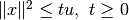, where
are scalar affine expressions and
inside a rotated version of the Lorretz cone. When a constraint of the form abs(x)**2 < t*u is passed to PICOS, it is implicitely assumed that t is nonnegative, and the constraint is handled as the equivalent, standard ice-cream cone constraint
.
A few examples:
>>> abs(x) < (2|x-1) #A simple ice-cream cone constraint
# (4x1)-SOC constraint: ||x|| < 〈 |2.0| | x -|1| 〉 #
>>> abs(Y+Z[0].T) < t+alpha #SOC constraint with Frobenius norm
# (2x4)-SOC constraint: ||Y + Z[0].T|| < t + alpha #
>>> abs(Z[1][:,0])**2 < (2*t-alpha)*(x[2]-x[-1]) #Rotated SOC constraint
# (4x1)-Rotated SOC constraint: ||Z[1][:,0]||^2 < ( 2.0*t -alpha)( x[2] -(x[-1])) #
>>> t**2 < D['Elisa']+t #t**2 is understood as the squared norm of [t]
# (1x1)-Rotated SOC constraint: ||t||^2 < D[Elisa] + t #
>>> 1 < (t-1)*(x[2]+x[3]) #1 is understood as the squared norm of [1]
# (1x1)-Rotated SOC constraint: 1.0 < ( t -1.0)( x[2] + x[3]) #
Semidefinite Constraints¶
Linear matrix inequalities (LMI) can be entered thanks to an overload of the operators << and >>. For example, the LMI

where 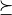 is used to denote the Löwner ordering, is passed to PICOS by writing:
>>> pic.sum([x[i]*b[i]*b[i].T for i in range(4)],'i','0...3') >> b[4]*b[4].T
# (4x4)-LMI constraint Σ_{i in 0...3} x[i]*b[i]*b[i].T ≽ b[4]*b[4].T #
Note the difference with
>>> pic.sum([x[i]*b[i]*b[i].T for i in range(4)],'i','0...3') > b[4]*b[4].T
# (4x4)-affine constraint: Σ_{i in 0...3} x[i]*b[i]*b[i].T > b[4]*b[4].T #
which yields an elementwise inequality.
For convenience, it is possible to add a symmetric matrix variable X, by specifying the option vtype=symmetric. This has the effect to store all the affine expressions which depend on X as a function of its lower triangular elements only.
>>> sdp = pic.Problem()
>>> X = sdp.add_variable('X',(4,4),vtype='symmetric')
>>> sdp.add_constraint(X >> 0)
>>> print sdp
---------------------
optimization problem (SDP):
10 variables, 0 affine constraints, 10 vars in 1 SD cones
X : (4, 4), symmetric
find vars
such that
X ≽ |0|
---------------------
In this example, you see indeed that the problem has 10=(4*5)/2 variables, which correspond to the lower triangular elements of X.
Warning
When a constraint of the form A >> B is passed to PICOS, it is not assumed that A-B is symmetric. Instead, the symmetric matrix whose lower triangular elements are those of A-B is forced to be positive semidefnite. So, in the cases where A-B is not implicitely forced to be symmetric, you should add a constraint of the form A-B==(A-B).T in the problem.
Write a Problem to a file¶
It is possible to write a problem to a file, thanks to the function write_to_file(). Several file formats and file writers are available, have a look at the doc of write_to_file() for more explanations.
Below is a hello world example, which writes a simple MIP to a .lp file:
import picos as pic
prob = pic.Problem()
y = prob.add_variable('y',1, vtype='integer')
x = prob.add_variable('x',1)
prob.add_constraint(x>1.5)
prob.add_constraint(y-x>0.7)
prob.set_objective('min',y)
#let first picos display the problem
print prob
print
#now write the problem to a .lp file...
prob.write_to_file('helloworld.lp')
print
#and display the content of the freshly created file:
print open('helloworld.lp').read()
Generated output:
---------------------
optimization problem (MIP):
2 variables, 2 affine constraints
y : (1, 1), integer
x : (1, 1), continuous
minimize y
such that
x > 1.5
y -x > 0.7
---------------------
writing problem in helloworld.lp...
done.
\* file helloworld.lp generated by picos*\
Minimize
obj : 1 y
Subject To
in0 : -1 y+ 1 x <= -0.7
Bounds
y free
1.5 <= x<= +inf
Generals
y
Binaries
End
Solve a Problem¶
To solve a problem, you have to use the method solve() of the class Problem. This method accepts several options. In particular the solver can be specified by passing an option of the form solver='solver_name'. For a list of available parameters with their default values, see the doc of the function set_all_options_to_default().
Once a problem has been solved, the optimal values of the variables are accessible with the value property. Depending on the solver, you can also obtain the slack and the optimal dual variables of the constraints thanks to the properties dual and slack of the class Constraint. See the doc of dual for more explanations on the dual variables for second order cone programs (SOCP) and semidefinite programs (SDP).
The class Problem also has two interesting properties: type, which indicates the class of the optimization problem (‘LP’, ‘SOCP’, ‘MIP’, ‘SDP’,...), and status, which indicates if the problem has been solved (the default is 'unsolved'; after a call to solve() this property can take the value of any code returned by a solver, such as 'optimal', 'unbounded', 'near-optimal', 'primal infeasible', 'unknown', ...).
Below is a simple example, to solve the linear programm:
![\begin{center}
$\begin{array}{ccc}
\underset{x \in \mathbb{R}^2}{\mbox{minimize}}
& 0.5 x_1 + x_2 &\\
\mbox{subject to} & x_1 &\geq x_2\\
& \left[
\begin{array}{cc}
1 & 0\\
1 & 1
\end{array}
\right] x &\leq
\left[
\begin{array}{c} 3 \\4 \end{array}
\right].
\end{array}$
\end{center}](_images/math/9be73110dd697dda15a0b60207da2a10dd912b29.png)
More examples can be found here.
P = pic.Problem()
A = pic.new_param('A', cvx.matrix([[1,1],[0,1]]) )
x = P.add_variable('x',2)
P.add_constraint(x[0]>x[1])
P.add_constraint(A*x<[3,4])
objective = 0.5 * x[0] + x[1]
P.set_objective('max', objective)
#display the problem and solve it
print P
print 'type: '+P.type
print 'status: '+P.status
P.solve(solver='cvxopt',verbose=False)
print 'status: '+P.status
#--------------------#
# objective value #
#--------------------#
print 'the optimal value of this problem is:'
print P.obj_value() #"print objective" would also work, because objective is valued
#--------------------#
# optimal variable #
#--------------------#
x_opt = x.value
print 'The solution of the problem is:'
print x_opt #"print x" would also work, since x is now valued
print
#--------------------#
# slacks and duals #
#--------------------#
c0=P.get_constraint(0)
print 'The dual of the constraint'
print c0
print 'is:'
print c0.dual
print 'And its slack is:'
print c0.slack
print
c1=P.get_constraint(1)
print 'The dual of the constraint'
print c1
print 'is:'
print c1.dual
print 'And its slack is:'
print c1.slack
---------------------
optimization problem (LP):
2 variables, 3 affine constraints
x : (2, 1), continuous
maximize 0.5*x[0] + x[1]
such that
x[0] > x[1]
A*x < [ 2 x 1 MAT ]
---------------------
type: LP
status: unsolved
status: optimal
the optimal value of this problem is:
3.0000000002
The solution of the problem is:
[ 2.00e+00]
[ 2.00e+00]
The dual of the constraint
# (1x1)-affine constraint : x[0] > x[1] #
is:
[ 2.50e-01]
And its slack is:
[ 1.83e-09]
The dual of the constraint
# (2x1)-affine constraint : A*x < [ 2 x 1 MAT ] #
is:
[ 4.56e-10]
[ 7.50e-01]
And its slack is:
[ 1.00e+00]
[-8.71e-10]
A note on dual variables¶
For second order cone constraints of the form  ,
where 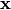 is a vector of dimension
,
where 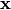 is a vector of dimension  ,
the dual variable is a vector of dimension
,
the dual variable is a vector of dimension  of the form
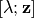, where the 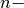 dimensional vector
of the form
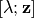, where the 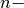 dimensional vector
 satisfies 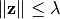.
satisfies 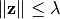.
Since rotated second order cone constraints of the form
 ,
are handled as the equivalent ice-cream constraint
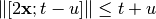,
the dual is given with respect to this reformulated, standard SOC constraint.
,
are handled as the equivalent ice-cream constraint
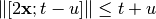,
the dual is given with respect to this reformulated, standard SOC constraint.
In general, a linear problem with second order cone constraints (both standard and rotated) and semidefinite constraints can be written under the form:
![\begin{center}
$\begin{array}{cclc}
\underset{\mathbf{x} \in \mathbb{R}^n}{\mbox{minimize}}
& \mathbf{c}^T \mathbf{x} & &\\
\mbox{subject to} & A^e \mathbf{x} + \mathbf{b^e} & = 0 &\\
& A^l \mathbf{x} + \mathbf{b^l} & \leq 0 &\\
& \Vert A^s_i \mathbf{x} + \mathbf{b^s_i} \Vert &\leq \mathbf{f^s_i}^T \mathbf{x} +d^s_i, & \forall i \in I\\
& \Vert A^r_j \mathbf{x} + \mathbf{b^r_j} \Vert^2 &\leq (\mathbf{f^{r_1}_j}^T \mathbf{x} +d^{r_1}_j) (\mathbf{f^{r_2}_j}^T \mathbf{x} +d^{r_2}_j), & \forall j \in J\\
& 0 & \leq \mathbf{f^{r_1}_j}^T \mathbf{x} +d^{r_1}_j, & \forall j \in J\\
& \sum_{i=1}^n x_i M_i & \succeq M_0
\end{array}$
\end{center}](_images/math/ebcca5d699966d2799d6dd335140b5ab842fe7c0.png)
where
are vectors of dimension
are scalars;
are vectors of dimension 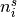 and 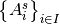 are matrices of size
;
are vectors of dimension
and
are matrices of size
;
is a vector of dimension 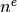 and
is a matrix of size
;
- 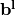 is a vector of dimension
and 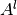 is a matrix of size
;
are
symmetric matrices (
mathbb{S}_m`).
Its dual problem can be written as:
![\begin{center}
$\begin{array}{cll}
\mbox{maximize} & \mathbf{b^e}^T \mathbf{\mu^e}
+ \mathbf{b^l}^T \mathbf{\mu^l} &
+ \sum_{i\in I} \big( \mathbf{b^s_i}^T \mathbf{z^s_i} - d^s_i \lambda_i \big)
+ \sum_{j\in J} \big( \mathbf{b^r_j}^T \mathbf{z^r_j} - d^{r_1}_j \alpha_j - d^{r_2}_j \beta_j \big)
+ \langle M_0, X \rangle\\
\mbox{subject to} & c + {A^e}^T \mathbf{\mu^e} + {A^l}^T \mathbf{\mu^l} &
+ \sum_{i\in I} \big( {A^s_i}^T \mathbf{z^s_i} -\lambda_i \mathbf{f^s_i} \big)
+ \sum_{j\in J} \big( {A^r_j}^T \mathbf{z^r_j} -\alpha_j \mathbf{f^{r_1}_j} - \beta_j \mathbf{f^{r_2}_j} \big)
= \mathcal{M} \bullet X \\
& \mu_l \geq 0 &\\
& \Vert \mathbf{z^s_i} \Vert \leq \lambda_i, &\forall i \in I\\
& \Vert \mathbf{z^r_j} \Vert^2 \leq 4 \alpha_j \beta_j, &\forall j \in J\\
& \ \ 0 \ \ \ \leq \alpha_j, &\forall j \in J\\
& X \succeq 0
\end{array}$
\end{center}](_images/math/fcb9664a20601be22db0ad1cb371b509ebff2243.png)
where  stands for the vector of dimension
with
stands for the vector of dimension
with  on the
on the  th coordinate, and the dual variables
are
th coordinate, and the dual variables
are
- 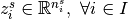
- 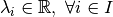
- 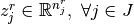
- 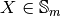


When quering the dual of a constraint of the above primal problem, picos will return
for the constraint
;
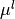 for the constraint
;
The
dimensional vector
for the constraint
;
The
dimensional vector
for the constraint
In other words, if the dual vector returned by picos is of the form 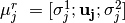, where
is of dimension
and
;
The symmetric positive definite matrix
for the constraint
.